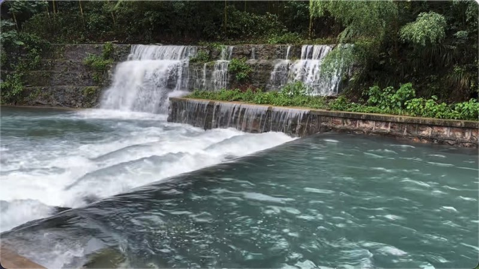
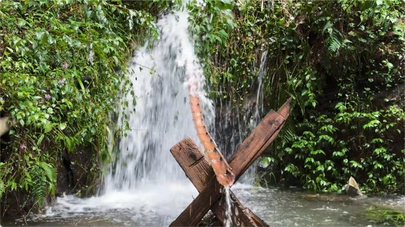

湾时光营地·鱼鳞坝 实景照片（图片待补）
①
湾时光营地 · 鱼鳞坝
Fish-scale Dam修葺一新的阶梯式鱼鳞坝，山泉水分层流淌，阳光下如碎银倾泻；分层浅滩、溪水冰凉、树荫全覆盖，是全村最适合低龄儿童的戏水核心。雨季还会形成小型叠瀑，拍照出片。
三面环山、溪流穿村，永红涧的泉水透亮清凉。
鱼鳞坝踩水、浅滩捞虾、山泉泡茶——把暑气，留在竹林之外。
邵东村坐落在宜兴湖㳇镇东南、苏浙两省交界，廿三湾贡茶古道与永红涧穿村而过。这里没有门票、没有围栏，溪水来自山泉，竹林遮阴几乎晒不到——是周边亲子家庭"说走就走"的戏水地。村口还落着"湾时光"营地新业态，集露营、溪水休闲与特色茶饮于一体。
修葺一新的阶梯式鱼鳞坝，山泉水分层流淌，阳光下如碎银倾泻；分层浅滩、溪水冰凉、树荫全覆盖，是全村最适合低龄儿童的戏水核心。雨季还会形成小型叠瀑，拍照出片。

沿溪往里走，接廿三湾步道。浅滩平缓，适合踩水、捞鱼捉虾；纯野溪的水声与鸟鸣，是夏日最治愈的白噪音。岸边石缝里常能抠到小石蟹（记得放生）。
登山道入口处的一汪小湖，水色偏蓝、岸线平缓，可顺路戏水、拍照。常作为"玩水+轻徒步"的折返点——爬一段廿三湾古道，下来在湖边踩踩水，刚好解乏。

从山岩渗出的清泉，冰凉甘洌。村民用来冰镇西瓜、泡阳羡茶——"自带山泉水"是邵东村夏天最朴素的奢侈。带个空瓶，装一程清凉回家。
6–9 月避暑玩水，7–8 月最佳（溪水清凉、荷花季）。4 月春日茶山、11 月竹海秋景为其他季节玩法。周末客流可达数千人，错峰更舒心。
⚠ 溪石长满青苔超滑，洞洞鞋 / 拖鞋易摔，请穿专业溯溪鞋。